Интерполяция в простейшем классическом смысле – это конструктивное восстановление (чаще всего приближенное) функции определенного класса по известным ее значениям или значениям ее производных в данных точках. Если функция задана в определенных (дискретных) точках на конечном интервале, то сущность интерполяции стоит в отыскании значений функции в промежуточных точках.
Самым распространенным применением интерполяции является получение таблично заданной функции для тех значений ее аргумента, которых в таблице как раз и нет. К интерполяции прибегают не только в случае таблично заданных функций, но и когда функция задана аналитически, но описывающая ее формула громоздка и требует для своего применения трудоемких вычислений.
Термин интерполирование (интерполяция) был впервые употреблён в 1656 году Дж. Валлисом при составлении астрономических и математических таблиц. Он происходит от латинского слова interpolo, означающего переделывать, подновлять, ремонтировать.
Пусть в точках 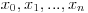 таких, что 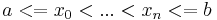 , известны значения функции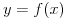, то есть на отрезке 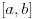 задана табличная функция (таблица 1.1).
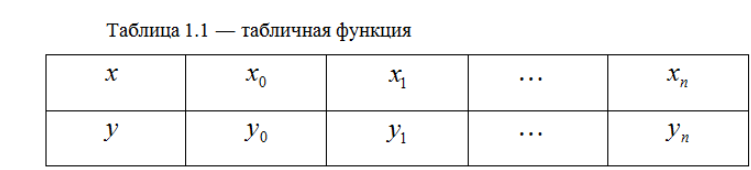Функция 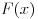 называется интерполирующей или интерполяционной для 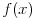 на , если ее значения 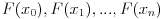 в заданных точках , называемых узлами интерполяции, совпадают с заданными значениями функции , то есть с 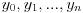 соответственно.
Процесс вычисления значений функции в точках отличных от узлов интерполирования называется интерполированием функции . Если 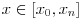, то задача вычисления приближенного значения функции в точке называется интерполированием.
Геометрически задача интерполирования функции одной переменной означает построение кривой, проходящей через заданные точки 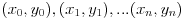 (рисунок 1.2).
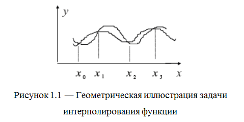
Задача становится однозначной, если в качестве выбрать многочлен степени выше n, такой что: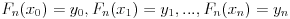
Многочлен 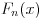, отвечающий вышеуказанным условиям, называется интерполяционным многочленом.
Знание свойств функции позволяет осознанно выбирать класс G аппроксимирующих функций. Широко используется класс функций вида (1.2), являющихся линейными комбинациями некоторых базисных функций 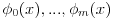.
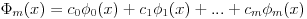(1.2)
Приближенную функцию нужно искать в виде многочлена степени m, с коэффициентами , которые находятся зависимости от вида приближения. Функцию 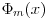 называют обобщенным многочленом по системе функций , а число m ― его степенью. Многочлен называется интерполяционным, если он удовлетворяет условию
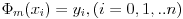(1.3)
Условие (1.3) позволяет найти приближающую функцию единственным образом
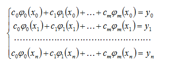
(1.4)
Система (1.4) есть система линейных алгебраических уравнений относительно коэффициентов .
Эта система n линейных уравнений имеет единственное решение, если выполняется условие m=n и определитель квадратной матрицы P
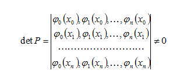
Система функций называется Чебышевской системой функции на , если определитель матрицы отличен от нуля при любом расположении узлов 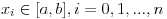, когда среди этих узлов нет совпадающих.
Если имеется такая система функций, то можно утверждать, что существует единственный для данной системы функций интерполяционный многочлен , коэффициенты которого определяются единственным образов из системы (1.4).
На практике чаще всего используются следующие системы:
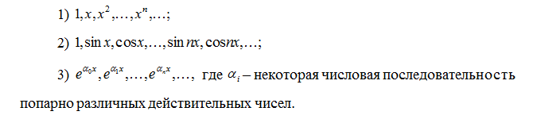
В первом случае интерполирование называется алгебраическим, во втором – тригонометрическим, а в третьем – экспоненциальным.